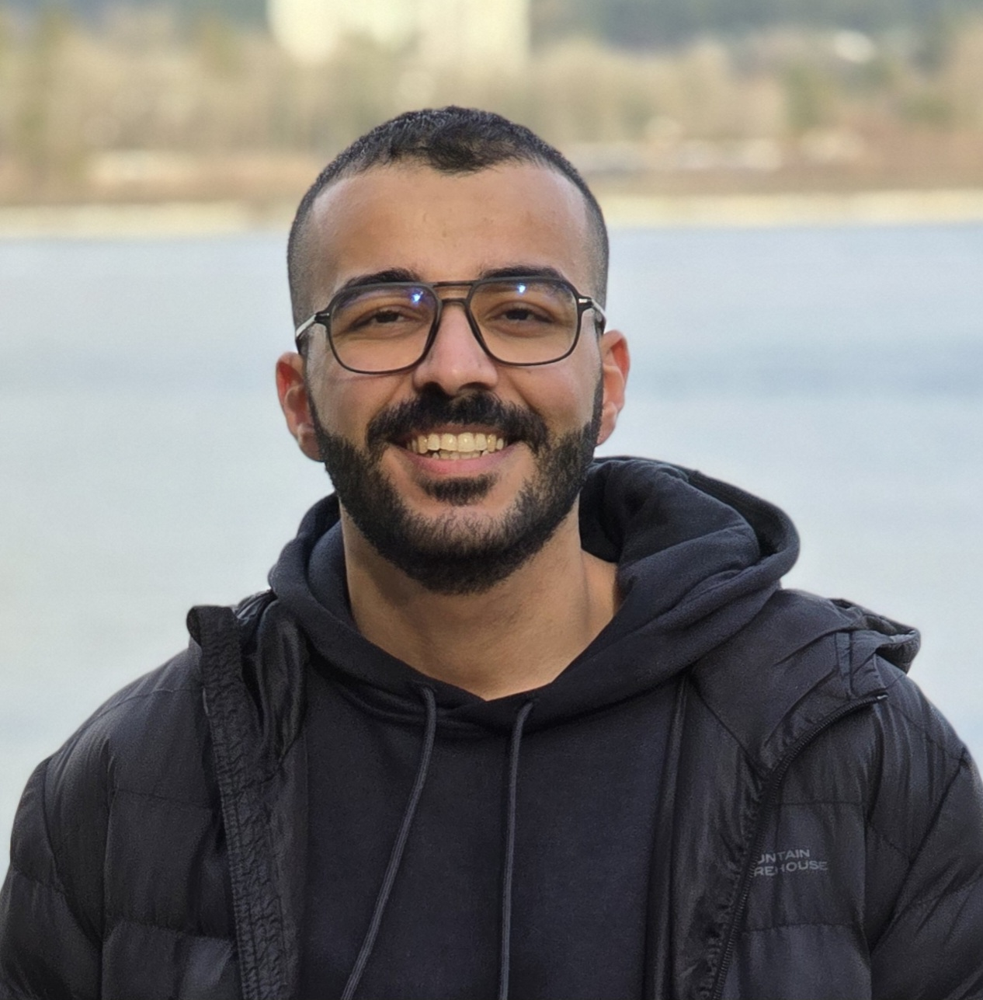

Hi, I'm Ahmed Elbadawy Mohamed.
I develop quantitative CT imaging methods, combining tracer-kinetic modelling with physics-informed deep learning, to measure lung and heart function for safer radiotherapy.
Supervised by Dr. Ting-Yim Lee and Dr. Stewart Gaede at Robarts Research Institute.

A bit about me
Radiotherapy is a key treatment for lung cancer, but radiation damage to healthy lung can leave patients short of breath and reduce their quality of life. Functional lung avoidance radiotherapy addresses this by steering radiation away from the best-functioning lung regions, helping patients keep breathing well after treatment without compromising tumour control. The heart is also at risk: radiation can cause regional damage to the heart’s blood supply, and both baseline heart function and heart dose have been shown to affect patient survival. However, mapping lung and heart function currently requires three separate nuclear medicine scans with different tracers, which is costly, time-consuming, and rarely done in practice.
My research obtains lung ventilation, lung perfusion, and myocardial perfusion from a single dynamic contrast-enhanced CT scan, which can be acquired during the routine treatment planning CT by adding contrast, and I have shown in animal studies that it agrees with established reference standards. This would allow radiotherapy plans to protect both lung and heart function, and enable follow-up toxicity assessment for early detection and prompt intervention. Because it needs only a CT scanner and standard iodinated contrast rather than radioactive tracers, it would also make functional avoidance radiotherapy accessible to centres without nuclear medicine infrastructure.
Alongside my thesis, I work on myocardial perfusion from coronary CTA and on stroke perfusion imaging; see the research page. Before Western, I studied Systems and Biomedical Engineering at Cairo University and worked on medical-imaging AI at Sejong University. Outside the lab, I enjoy climbing, hiking, running, camping and other outdoor activities, as well as travelling, cooking, gaming, anime, and movies.
Research interests
Physics-informed AI
Physics- and physiology-informed AI to improve pharmacokinetic modelling.
Cardiopulmonary imaging
Functional imaging of cardiopulmonary physiology.
Personalized cancer treatment
Using functional imaging in personalized cancer treatment, including functional avoidance radiotherapy planning to spare healthy tissue and reduce toxicity.
Current projects
Lung & heart function from one dynamic CT scan PhD thesis
Lung ventilation, lung perfusion and myocardial perfusion from a single dynamic contrast-enhanced CT scan, for functional avoidance radiotherapy.
Read more →Myocardial perfusion from CTA
Turning a standard coronary CTA into a combined anatomical and functional exam, with a residual U-Net refining tracer-kinetic blood-flow maps.
Read more →Stroke perfusion & EVT eligibility
Brain perfusion maps from multiphase CTA, with AI segmentation of core and penumbra to assess thrombectomy eligibility using the DEFUSE 3 criteria.
Read more →Highlights
- Transferred from the MSc to the PhD program in Medical Biophysics.
- Two oral presentations at the Joint AAPM|COMP Annual Meeting in Vancouver; the V/Q talk received a Science Council Session Award (Innovations in Medical Physics).
- Abstract published in Proc. SPIE Medical Imaging 2026.
- Oral presentation at SPIE Medical Imaging, Vancouver.